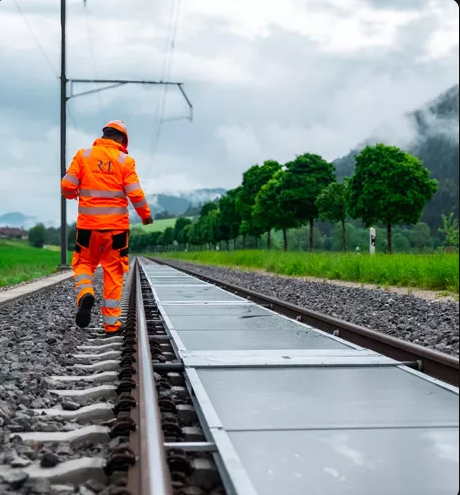

1ʳᵉ centrale solaire amovible sur une voie circulée
Publié le 03/02/2026 — Mis à jour le 11/02/2026 — Source : Groupe SNCF

Une solution innovante pour produire de l'énergie
Premier consommateur d'électricité et 2ᵉáµáµ‰ propriétaire foncier de France, le groupe SNCF a signé un contrat de collaboration avec la start-up suisse Sun-Ways. Celle-ci a conçu une innovation permettant d'exploiter l'espace inutilisé situé entre les rails d'une voie ferrée pour y installer des centrales solaires amovibles, sur lesquelles circulent des trains de voyageurs.
Ce projet pilote a été lancé à Buttes (canton de Neuchâtel, Suisse) le 24 avril 2025 et s'achèvera en avril 2028. Il mobilise la Direction Technologies, Innovation et Projets de SNCF ainsi que les équipes de SNCF Réseau.
Chiffres clés
Trois années de tests
Différents tests sont réalisés pendant l'exploitation :
- Pose et dépose des panneaux photovoltaïques
- Analyse d'éblouissement
- Inspection de la voie (mesure de l'écartement, etc.)
- Impacts sur les opérations de maintenance ferroviaire
- Études de production et d'encrassement